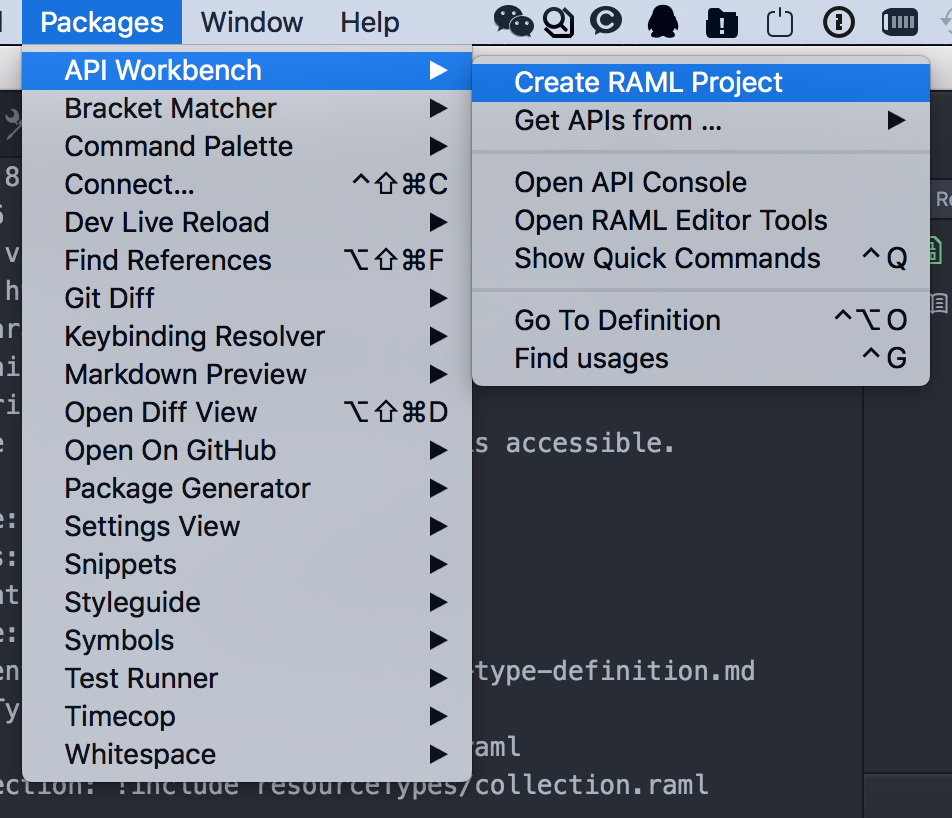

App开发人员应当了解的一些API知识，熟悉编写API文档的一些工具和方法。
RESTful API
全称：Representational State Transfer(表现层状态转化)
其实我们常见的GET, POST等的API都属于这类，RESTful有以下几个关键概念：
- 一种设计风格而不是标准，只是提供了一组设计原则和约束条件
- 资源，用一个URI（统一资源定位符）指向它，每种资源对应一个特定的URI
- Method
- GET：用来获取资源
- POST用来新建资源（也可以用于更新资源）
- PUT用来更新资源
- DELETE用来删除资源
RAML是啥？
RAML是一个API建模语言，完全遵守RESTful风格，有严格的语法来约束，采用yaml描述，可以通过一系列工具转化为HTML，Wiki等文档样式。
开始写一个API
先装个工具
采用Atom插件 API Workbench 打造一个可视化工具，自动化提示，语法检测等功能，一应俱全，非常适合编写RAML。

熟读基本语法
点击查看
创建API工程
本文例子采用v0.8版本，目前1.0版本配套的工具还不太完善，等后续更新。
1
2
3
4
5
6
7
8
9
10
11
12
13
14
15
16
17
18
19
|
title: A6
version: v2
baseUri: http://{apiDomain}.hujiang.com/{version}
baseUriParameters:
apiDomain:
description: |
The sub-domain at which the API is accessible.
enum: [ "test" , "yz.test", "qa.test" ]
mediaType: application/json
protocols: [ HTTP, HTTPS ]
documentation:
- title: 类型定义
content: !include documentation/type-definition.md
resourceTypes:
- base: !include resourceTypes/base.raml
- collection: !include resourceTypes/collection.raml
schemas:
- test: !include schemas/test-schema.json
|
有几个关键词： type, uriParameters, require, queryParameters, displayName, description，具体可参看文档
1
2
3
4
5
6
7
8
9
10
11
12
13
14
15
16
17
18
19
20
21
22
23
24
25
26
27
28
| /test/{uriParam1}/{uriParam2}:
type: collection
displayName: 获取xxxxx
uriParameters:
screenWidth:
required: true
displayName: uriParam1
description: uriParam1说明
type: integer
screenHeight:
required: true
displayName: uriParam2
description: uriParam2说明
type: integer
get:
description: 获取xx内容
queryParameters:
param1:
required: true
displayName: param1
description: param1说明
type: string
responses:
200:
body:
application/json:
schema: test
example: !include examples/test-example.json
|
ResourceTypes
资源类型统一描述，常见的统一定义HTTP Header，示例如下：
1
2
3
4
5
6
| get?:
headers:
Hujiang-Agent:
description: |
统一的沪江Agent定义
required: true
|
Documentation
API的一些说明性文档，例如某些特定值的定义和说明，注意事项等
Schemas
定义返回结构中的数据定义，示例：
1
2
3
4
5
6
7
8
9
10
11
12
13
14
15
16
17
18
19
20
21
22
23
24
25
26
27
| {
"required" : true ,
"$schema" : "http://json-schema.org/draft-03/schema" ,
"type" : "array" ,
"items" : {
"type" : "object",
"properties" : {
"adType" : {
"type" : "integer" ,
"description": "参看广告类型定义",
"required" : true
},
"adId" : {
"type" : "integer" ,
"description" : "广告位ID",
"required" : false
},
"adItemList" : {
"type" : "array" ,
"description" : "广告条列表，最大不超过6个",
"required" : true ,
"items" : {
"type" : "object" ,
}
}
}
}
|
另外在API头部可以统一include，方便后续API实体中直接调用。
Examples
根据上述的Schemas，提供一个API返回示例，便于用户更好地了解API，示例如下：
1
2
3
4
5
6
7
8
9
10
11
12
13
14
15
16
17
18
19
20
21
22
23
24
25
| [
{
"adType" : 31,
"adId" : 10001,
"adItemList" : [
{
"adItemId" : 1021021,
"title" : "广告条标题",
"summary" : "广告条描述",
"actionType" : 1,
"actionUrl" : "http://www.hujiang.com",
"startTime" : "2016-2-29T17:54:46.203+08:00",
"endTime" : "2016-3-29T17:54:46.203+08:00",
"imageUrl" : "http://i2.w.hjfile.cn/news/201602/201602247003009941.jpg",
"orderIndex" : 2,
"fillColor" : 1023123123123,
"scheme" : "hujiang://",
"appIdentifier" : "com.hujiang.normandy"
}
]
},
... ...
}
]
|
生成HTML或wiki
基本差不多了，就要以找一些工具转成用户可以直观看到的文档，可以使用如下工具：
raml2html: https://github.com/raml2html/raml2html
raml2wiki: https://github.com/jhitchcock/raml2wiki
它还可以做什么
既然是建模语言，所有的API定义，返回值都非常方便结构化，利用这些数据我们可以自制mock server，将API整个流程打通，非常期待大家的参与。
RAML vs. Swagger vs. API Blueprint
mikestowe上有专门针对这三类做了比较，最后综合得分RAML排首位，当然大家也要结合当下团队实力，选择合适的工具
参考